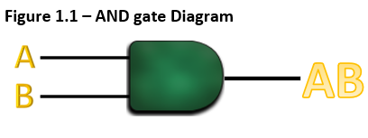
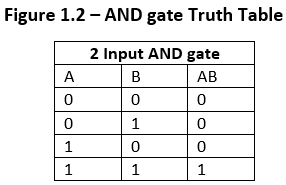
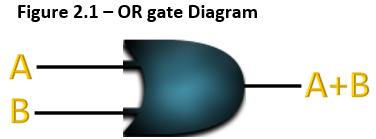
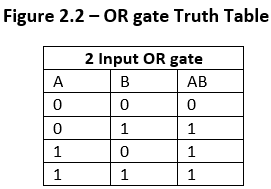
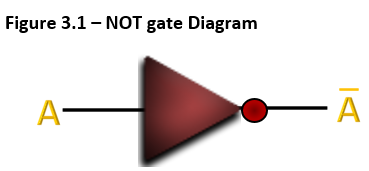
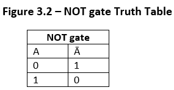

The AND logic gate will give a “high” output, or an output of ‘1’ only if all inputs are 1. As shown in
Figure 1.2, inputs A and B must both have an output of 1 in order for the output of AB to also be 1. A dot
(.) can be used to represent the AND operation such as A.B. However, the dot can also be omitted such as in
AB.


The OR logic gate will give a high output if at least one of the inputs is 1. A low output, or an output of
0, is only obtained if both inputs are 0. A plus (+) is generally used to represent the OR operation such as
A+B.


The NOT gate gives an output that is the inverse of its input. If the input variable is A, then the inverted
output would be NOT A. Inverted outputs are generally shown as Ā or A’. If the input is A then the output
would be Ā. If the output of A is 1 then the output of Ā would be 0.